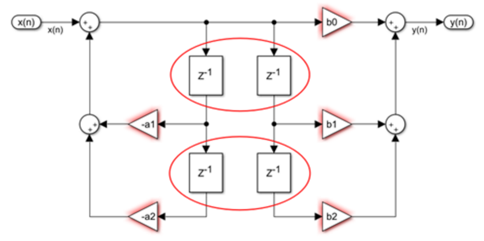

低通滤波器
一阶低通滤波器
数学表达式
离散表达形式
1 | rangeLpf += (sensorData->zrange.distance - rangeLpf) * 0.1f; |
当α=0.1时，T=9dt，对应的传递函数表达式
推导
一阶滤波的表达式
使用一阶向后差分法
可得：
化简：
令
因此，最终表达式为：
二阶低通滤波器
数学表达式
其中，$w_c$为二阶低通滤波截止频率，$\xi$为阻尼比。
离散表达形式
推导
二阶滤波的表达式
使用双线性变换法
令$b_0={w}_{c}^2 {T}_{s w}^2$
根据z变换
带入上式中，得
最终得到
巴特沃斯低通滤波器
数学表达式
参数的归一化表，带入系数可得到：截止频率为1弧度（$\frac 1 {2\pi}Hz$ ）的滤波器
二阶巴特沃斯的数学表达式
如果要得到任意截止频率$w_c$的二阶滤波器，将s替换为$\frac s {w_a}$
离散表达形式
其中
简化后的代码形式为
1 | float fr = sample_freq/cutoff_freq; |
离散化频率与数字频率不同
如果我们直接使用双线性变换进行离散化之后，会发现转换前的模拟滤波器和转换后的数字滤波器的幅频响应曲线并不一样。这是因为双线性变换中，数字截止角频率$w_d$和模拟截止角频率$w_a$的关系是非线性的。
对于s域来说，在模拟截止频率为$f_a$时有：
对于z域来说，在数字截止频率为$f_d$的情况下，$z=e^{sT}$ 其中, $s=jw_d$，$w_d=2\pi*f_d$ ，$T=1/f_s$，则有
带入双线性变换
因此
滤波器的设计与推导
- 根据我们想要的数字滤波频率得到我们想要的模拟滤波器频率
- 根据期望的模拟截止频率，将滤波器去归一化。
- 进行双线性变换
- 写成代码
如果期望的数字滤波器截止频率为$f_d$，对应的模拟滤波器截止角频率$w_{a}$为：
采用双线性变换法$s=\frac{2}{T} * \frac{z-1}{z+1}$，并将s改为$s/w_a$，则
截止频率为$s/w_{a}$的二阶巴特沃斯表达式为
将$s/w_{a}$代入可得：
令$\Omega=\tan \left(\pi \frac{f_d}{f_s}\right)$，可得：
再令，$B_0=\Omega^2, B_1=2 \Omega^2, B_2=\Omega^2, c=\Omega^2+1.414 \Omega+1, A_1=2 \Omega^2-2, A_2=\Omega^2-1.414 \Omega+1$，得：
因此，最终表达式为：
其中，
代码及简化
1 | float fr = sample_freq/cutoff_freq; |
修改结构，结果相同

共用延时模块
此时，经过简化的代码为
1 | float lpf2pApply(lpf2pData* lpfData, float sample) |